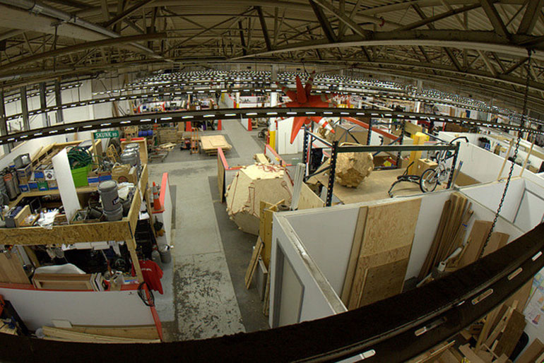

Kickstarted: Finding Space (and Making a Makerspace)

This week marks an important milestone for OpenROV: we’re moving out of the garage. Not because we’re planning for exponential growth, hiring dozens of people, or have raised venture capital. We’re moving out because we have completely run out of space. Our movement around our Cupertino, Calif. garage is now limited to a maze of stacked boxes: acrylic plastic, webcams, brushless motors. It’s all here. Despite our meticulous planning and strategy, we still underestimated the amount of actual, physical space that this process would require.
Unfortunately, for maker businesses like us, accidental entrepreneurs whose projects receive a sudden Kickstarter-boost in demand, it’s difficult to project just how much space you’ll need. Especially when you’re not sure how that demand will play out post-Kickstarter.
The garage (or living room) is the perfect and obvious starting point. There’s no long-term lease, it’s flexible, and it doesn’t cost anything extra. However, as the garage occupation persists, downsides start to emerge. Roommates and spouses start complaining, space becomes limited, and it can be difficult to equip it with the right tooling.
Just as makerspaces like TechShop have redefined the reach of garage tinkerers by giving them access to a full suite of rapid prototyping tools, they’re also creating a demand for a “garage-plus” space for maker businesses. It’s a real estate demand that some makerspaces are having a hard time keeping up with. For example, TechShop in San Francisco has a long waiting list for the handful of 50- to 100 square foot “cages” (fenced off storage spaces) where these businesses are housing materials and inventory.
From a traditional real estate perspective, the next steps for a growing business are pretty straightforward. SF Made, a wonderful organization here in San Francisco, assists businesses produce locally by helping them evaluate their space needs and walking them through the options and economic incentive programs associated with their decisions. If your space needs are significant, a good real estate broker who specializes in tenant representation can provide similar assistance in your local market (tenant rep brokerage fees are typically paid by the landlord, but it’s still important to do your homework on the best brokers).
For maker businesses, though, it can be hard (and often not necessary) to make that big of a space commitment, especially when demand is uncertain, as with the Kickstarter boost. This dilemma has created a big demand for this micro-factory space.
One makerspace model, Artisan’s Asylum in Sommerville, Mass., seems to be taking full advantage of this demand. They’re not your typical makerspace, a hybrid of the co-op model of hackerspaces like Noisebridge and the gym-like membership of TechShop. But what really makes Artisan’s Asylum unique is its size: 40,000 square feet divided into shared tools and individually marked maker areas.
Artisan’s Asylum would be hard to find if you weren’t looking for it. Nestled inconspicuously into the corner of a mostly residential area, its unassuming facade doesn’t seem like it houses one of the largest makerspaces in the country. Gui Cavalcanti, the executive director, likes it that way. On our tour last week, he emphasized the importance of Sommerville zoning codes that allowed light industrial near residential, citing that nearly 50 percent of the members come from the surrounding neighborhoods.
“Makers need a place to put their projects down,” Gui told us as we walked through the massive space. Individual maker areas are taped or partitioned off (whichever works) into to zones as small as 50-square feet and as large as 250 square feet. It’s not uncommon to see a motorcycle being worked on in one area and a fashion designer pinning fabrics on a model in the next, or a biologist growing her own moss adjacent to a woodworker making bowls. They’ve got every type of maker.
They also have shared tooling: laser cutters, CNC Mills, and full metal and wood shops. Gui told me the space only owns about 20 percent of the tools, with most of the other equipment leased from members in exchange for reduced membership fees. The full time staff (as well as a talented and invested membership) keep the machinery in good working condition.
It’s hard to argue with the success of their model. In less than two years, they’ve hardly been able to keep up with growth and demand, moving from 1,000 square feet to 9,000 square feet to 25,000 square feet. A new addition grew the building to the current 40,000 square feet. And they still have 150 people on their waiting list. Clearly Gui and the team have found something that works.
The space is perfect for the type of micro-manufacturing company that OpenROV and many others are turning into. They have 2,000 square feet of “flexspace,” space that can be grown into temporarily (as little as one week) while a maker has a surge in demand, paying per square foot of extra space that’s needed. Gui also emphasized the importance of being located near adjacent office and industrial buildings, as two of their members had completely outgrown the space and now resided in buildings next door.
Artisan’s Asylum isn’t just providing tools, it’s creating an entire ecosystem for a maker economy to flourish in their city. I think city officials, urban planners and developers should take note.
If you want to learn more about Artisan’s Asylum’s model and how you can build a similar makerspace in your area, you’re in luck. Gui and the team are open sourcing their operation, by offering a “How to Make a Makerspace” seminar in February.
Also, we’re currently plotting our own makerspace in Berkeley, Calif. for maker pros – businesses with similar space and tool needs. If you’re interested in joining us, please drop your information here.